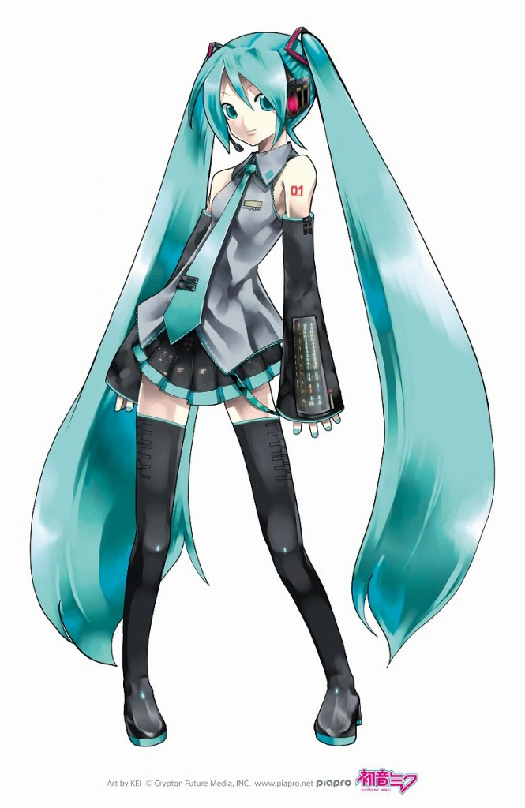
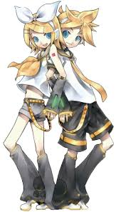
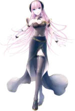

Vocaloid characters, often referred to as "Vocaloids," are virtual singers created using Yamaha's Vocaloid software. Each Vocaloid is associated with a specific voicebank and has a unique character design, personality, and backstory. These characters have become iconic figures in the world of music, particularly in the genres of J-pop, electronic music, and various subcultures.
Who is Hatsune Miku?

Hatsune Miku, officially code-named CV01, is a Vocaloid software voicebank developed by Crypton Future Media and its official anthropomorphic mascot character, a 16-year-old girl with long, turquoise twintails. Miku's personification has been marketed as a virtual idol, and has performed at live virtual concerts onstage as an animated projection (rear-cast projection on a specially coated glass screen).
Hatsune Miku was the first Vocaloid developed by Crypton Future Media after they handled the release of the Yamaha vocal Meiko and Kaito. Miku was intended to be the first of a series of Vocaloids called the "Character Vocal Series" (abbreviated "CV Series"), which included Kagamine Rin/Len and Megurine Luka. Each had a particular concept and vocal direction.
She was built using Yamaha's Vocaloid 2 technology, and later updated to newer engine versions. She was created by taking vocal samples from voice actress Saki Fujita at a controlled pitch and tone. Those samples all contain a single Japanese phonic that, when strung together, creates full lyrics and phrases. The pitch of the samples was to be altered by the synthesizer engine and constructed into a keyboard-style instrument within the Vocaloid software.
Other Characters:
Kagamine Rin & Kagamine Len

Kagamine Rin & Len (鏡音リン・レン), codenamed CV02, were originally Japanese VOCALOIDs developed and distributed by Crypton Future Media, Inc., and were initially released in December 2007 for the VOCALOID2 engine. They are the second set of vocals for Crypton's Character Vocal Series and were both Character Voice VOCALOIDs. There has since been 3 other installments for VOCALOID, with their final release being Kagamine Rin/Len V4x.Their voices are provided by the Japanese voice actress, stage actress, and singer Asami Shimoda (下田麻美 Shimoda Asami). According to Asami, Len's voice was achieved by singing within her chest, while Rin's was achieved by singing at the top of her head.
The development of the Kagamines began when Crypton formulated the concept of making a pair of female and male voicebanks. The first idea was for two voices of a girl and an identical male of the opposite gender, just like twins.Crypton originally had the intention of distributing them as twins, but this was not adopted. Crypton stated that they approved of the many different interpretations of Rin and Len's relationship that they saw in different works. Crypton's final announcement was that the Kagamines were neither siblings nor lovers. During their Append's production, Wataru Sasaki (aka. Wat) described them as two bodies with one soul. Wat also said that the Append boxart makes the pair seem like twins, due to the foetal position they were in.
Megurine Luka

Megurine Luka (巡音ルカ), codenamed CV03, is a Japanese VOCALOID developed and distributed by Crypton Future Media, Inc., and was initially released in January 2009 for the VOCALOID2 engine. She is the third release of Crypton's Character Vocal Series and is a Character Voice VOCALOID. In March 2015, additional voicebanks and an upgrade to the VOCALOID4 engine were released.
Her voice is provided by the Japanese voice actress and singer, Yū Asakawa (浅川悠 / Asakawa Yū), who was recorded in Japanese and English for the voicebank.Megurine Luka was the first VOCALOID designed to fully support producing vocals in both Japanese and English, and the first addition to the Character Vocal Series software line characterized as an adult. Luka is also often associated with more mature and sophisticated music styles, including jazz, ballads, and electronic music.
KAITO
KAITO (カイト) is a Japanese VOCALOID developed originally by Yamaha Corporation and distributed by Crypton Future Media, Inc.. He was one of the 4 known "Project Daisy" vocals. His VOCALOID3 update was developed and distributed by Crypton. He was initially released in February 2006 for the first VOCALOID engine. There has since been a second installment developed for the VOCALOID3 engine dubbed KAITO V3. His voice is provided by the famous Japanese singer, Naoto Fūga (風雅なおと).
Across all designs, KAITO is depicted as a male with short blue hair. His muffler has become one of his most iconic items and is wrapped around his neck and shoulders with the ends off to the side or behind him. Besides that, KAITO is also often associated with more traditional and nostalgic music styles, and his popularity has grown significantly over time.
MEIKO
MEIKO (メイコ) is a Japanese VOCALOID originally developed by Yamaha Corporation and distributed by Crypton Future Media, Inc.. She was one of the 4 known "Project Daisy" vocals. Her VOCALOID3 update was developed and distributed by Crypton Future Media. She was initially released in November 2004 for the first VOCALOID engine. There has since been a second installment developed for the VOCALOID3 engine, dubbed MEIKO V3. Her voice is provided by the Japanese female singer-songwriter, Meiko Haigō (拝郷 メイコ Haigō Meiko).
"MEIKO" comes directly from her voice provider's name, "Meiko Haigō". MEIKO's codename was "HANAKO";it likely came from "Hanako Yamada (山田花子)", a placeholder name for female characters, and the Japanese equivalent to "Jane Smith". "Megumi" was also a name considered during her development. She is often misnamed Sakine Meiko by fans. The name originates from the eponymous derivative character, depicted as herself in her younger days.
More Characters:
Character |
 |
||
|---|---|---|---|
| Kasane Teto | flower | GUMI |
Vocaloid characters are not just tools for music production; they have become cultural icons with their own fandoms, merchandise, and even live concerts using holographic technology. Each character's unique design, voice, and personality allow them to appeal to different audiences and inspire a wide range of creative works, including music, art, and fan fiction.
The community surrounding Vocaloids is vibrant and diverse, with fans and producers creating original songs, remixes, and visual content that contribute to the characters' ongoing popularity. As a result, Vocaloid characters have transcended their origins as software and have become beloved figures in global pop culture.